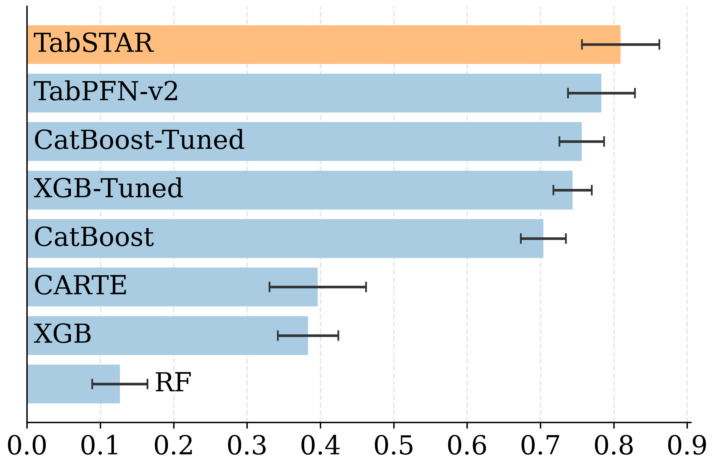
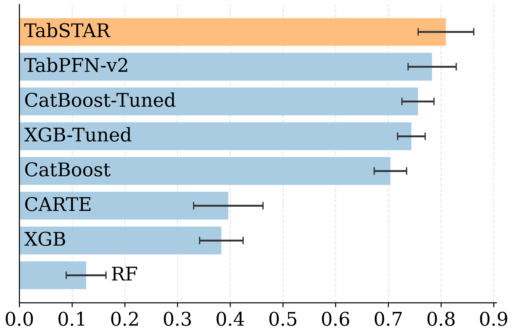
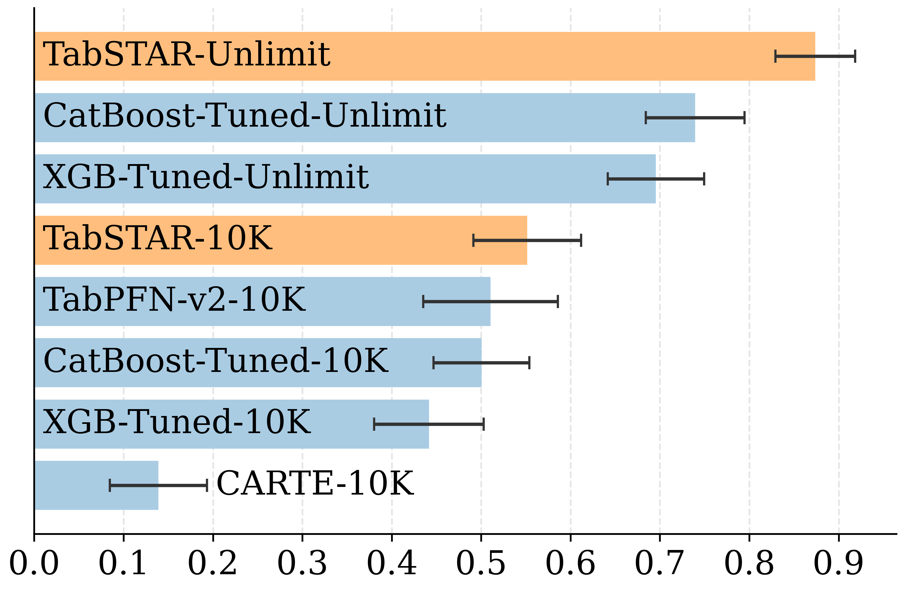

Up to 10K examples

While deep learning has achieved remarkable success across many domains, it has historically underperformed on tabular learning tasks, which remain dominated by gradient boosting decision trees (GBDTs). However, recent advancements are paving the way for Tabular Foundation Models, which can leverage real-world knowledge and generalize across diverse datasets, particularly when the data contains free-text. Although incorporating language model capabilities into tabular tasks has been explored, most existing methods utilize static, target-agnostic textual representations, limiting their effectiveness. We introduce TabSTAR: a Foundation Tabular Model with Semantically Target-Aware Representations. TabSTAR is designed to enable transfer learning on tabular data with textual features, with an architecture free of dataset-specific parameters. It unfreezes a pretrained text encoder and takes as input target tokens, which provide the model with the context needed to learn task-specific embeddings. TabSTAR achieves state-of-the-art performance for both medium- and large-sized datasets across known benchmarks of classification tasks with text features, and its pretraining phase exhibits scaling laws in the number of datasets, offering a pathway for further performance improvements.
TabSTAR makes training tabular models effortless. Just install the package, load your data, and let TabSTAR do the work — from preprocessing to prediction.
TabSTAR will be available as a pip package in the next few days. Join our waiting list to be notified when it's ready!
Once TabSTAR is available, you'll be able to install it via pip:
pip install tabstarAnd use it to fit and predict with your CSV data:
from tabstar import tabstar
import pandas as pd
# Load your data
df = pd.read_csv('your_data.csv')
target_column = 'YOUR_TARGET_COLUMN'
# Split features and target
X = df.drop(target_column, axis=1)
y = df[target_column]
# Initialize and fit TabSTAR
model = tabstar()
model.fit(X, y)
# Make predictions
predictions = model.predict(X)

@article{shapira2024can,
title = {Can Large Language Models Replace Economic Choice Prediction Labs? The Case of Language-based Persuasion Games},
author = {Shapira, Eilam and Madmon, Omer and Reichart, Roi and Tennenholtz, Moshe},
journal = {arXiv preprint arXiv:2401.17435},
year = {2024},
}